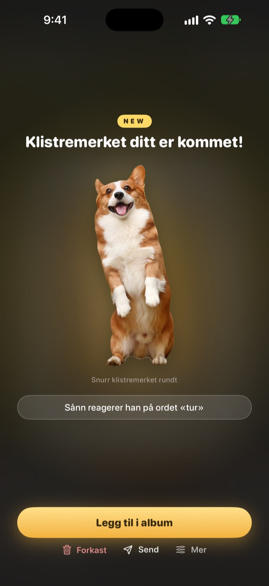
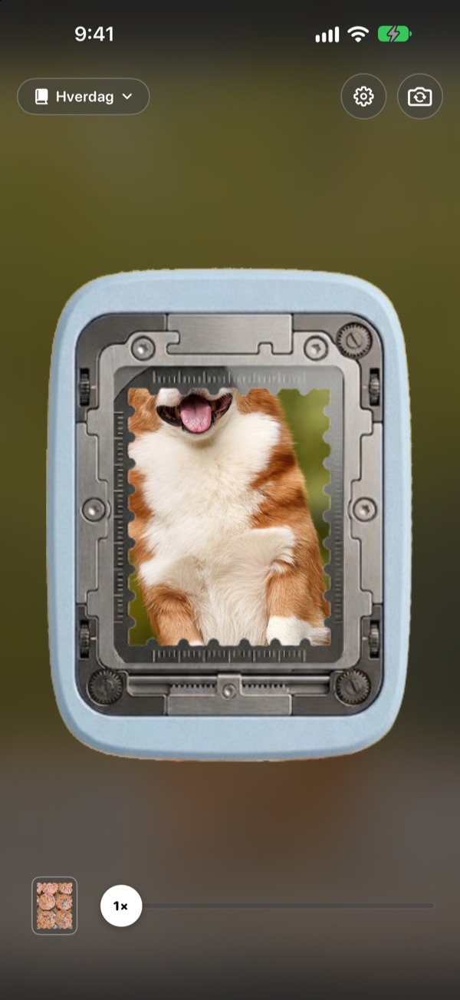
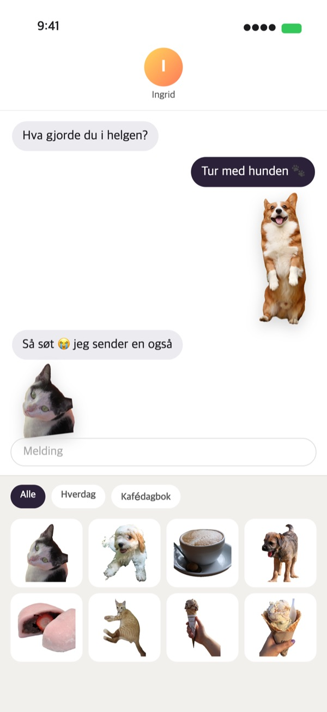
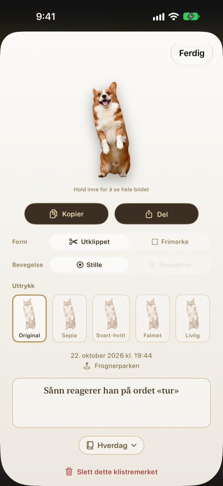
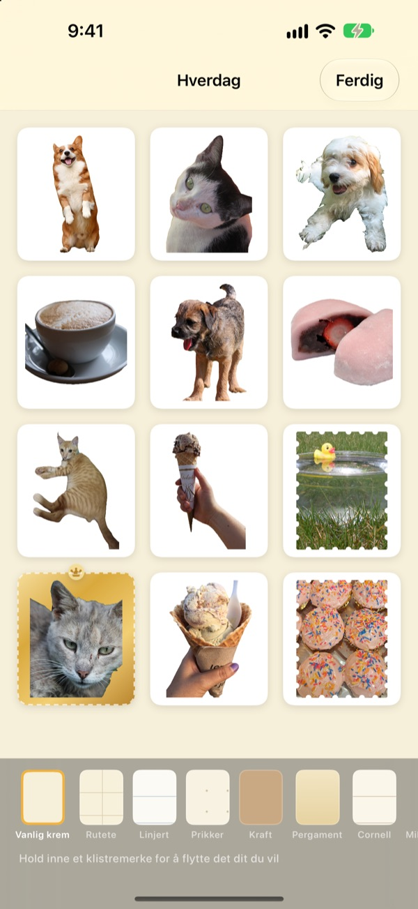

Hold inne.
Øyeblikket er et klistremerke.
Still inn scenen i hullemaskinens vindu, hold inne og slipp. Hunden din klippes ut etter sin egen form, med et lite glimt av bevegelse fra rett før og etter trykket. Send den med en gang fra Meldinger eller tastaturet.
Alle funksjoner er gratis. Klistremerker og bilder blir værende på enheten din.

Prøv selv
Velg en scene, hold inne hullemaskinknappen og slipp. Prøv så en annen form og et annet uttrykk.
De fineste øyeblikkene blir liggende i Bilder
Du fanger hunden akkurat idet den rekker tunge. Men skal det bli et klistremerke, må du finne bildet, klippe det ut og åpne enda en klistremerke-app. I mellomtiden har samtalen for lengst gått videre. Punching river av klistremerket der du tar bildet, og så snart du legger det i et album, ligger det i klistremerkeskuffen i Meldinger.
Motiver klippes ut, landskap blir frimerker
Er det noe å klippe ut, som et menneske, et kjæledyr eller en gjenstand, får du akkurat det. Er det ikke det, som i et landskap, rives det av som et frimerke med takket kant.
Et kort øyeblikk med bevegelse rundt trykket blir med, så klistremerket beveger seg.

Rett i Meldinger og på tastaturet
Avrevne klistremerker dukker opp i klistremerkeskuffen i Meldinger. Slå på Punching-tastaturet, så kan du velge og lime dem inn i andre apper også.
Bevegelige klistremerker kommer fram i bevegelse. Hold inne et klistremerke for å kopiere det, og lim det inn hvor du vil.

Form og uttrykk, også etterpå
Bytt mellom utklippet og frimerke, mellom bevegelse og stillbilde, når du vil. Originalbildet tas vare på, så alt blir like skarpt som første gang, uansett hvor ofte du bytter.
Velg et uttrykk blant Original, Sepia, Svart-hvitt, Falmet, Livlig og Cyan, og legg til noen ord, dato og sted.

Samle i album, skriv ut på papir
Lag et album for hvert tema, så kan du velge album for album i Meldinger og på tastaturet også. Velg sider som kraft, rutete, linjert eller pergament, og ordne klistremerkene i den rekkefølgen du vil.
Gjør et album om til en PDF til utskrift med skjærelinjer i frimerkeform, og skriv den ut rett på klistremerkepapir.

Kom i gang på tre trinn
- 1
Sikt
Plasser det du vil fange, i vinduet midt i kameraet.
- 2
Hold inne og slipp
Klistremerket rives av i det øyeblikket du slipper.
- 3
Lagre og send
Legg det i et album, så er det klart i Meldinger og på tastaturet.
Hvor du bruker det, og hvor du endrer det
- Meldinger
- ＋ ved siden av tekstfeltet ▸ Klistremerker ▸ Punching-klistremerker
- Andre apper
- Slå på Punching-tastaturet, bytt til det med globustasten, velg og lim inn
- Overalt
- Hold inne et klistremerke, kopier det og lim inn
- Papirklistremerker
- ⋯ i et album ▸ Bruk ▸ Klistremerkeark til utskrift (PDF)
- Sider og rekkefølge
- ⋯ i et album ▸ Pynt fritt
- Eldre bilder
- Importer fra Bilder i et album
- Første form
- Innstillinger ▸ Riv av ▸ Standardform
- Se bevegelse
- Innstillinger ▸ Visning ▸ Spill av bevegelse automatisk
- Rask start
- Åpne Punching-kamera i Snarveier eller Kontrollsenter
Innstillinger finner du bak tannhjulet øverst til høyre i kameraet.
Vanlige spørsmål
Klistremerket mitt beveger seg ikke.
Gå til Innstillinger ▸ Visning øverst til høyre i kameraet, og sjekk at Spill av bevegelse automatisk er slått på. Trykk deretter på klistremerket, og sjekk at Bevegelse er slått på under Form. Bevegelsen tas alltid opp, så du kan slå den på når som helst. Bilder importert fra Bilder-appen er ett enkelt bilde og beveger seg derfor ikke.
Jeg fikk et frimerke i stedet for et utklippet klistremerke.
Scener uten noe å klippe ut, som et landskap, rives automatisk av som et frimerke. Trykk på klistremerket for å endre det under Form når som helst. Vil du ha frimerker fra starten av, endrer du Innstillinger ▸ Riv av ▸ Standardform.
Jeg ser ikke klistremerkene mine i Meldinger.
I Meldinger trykker du på ＋ ved siden av tekstfeltet ▸ Klistremerker og finner Punching-klistremerker. De dukker opp når du har revet av minst ett klistremerke i Punching, og har du flere album, kan du bla album for album. Du finner en trinnvis veiledning i Innstillinger ▸ Bruk ▸ Bruk i Meldinger og på tastaturet.
Hvordan slår jeg på tastaturet?
Trykk på Åpne Innstillinger under Innstillinger ▸ Bruk ▸ Bruk i Meldinger og på tastaturet, og slå på Tastaturer ▸ Punching-klistremerker. For å lime inn klistremerker trengs Tillat full tilgang, men tastaturet leser eller sender aldri det du skriver, og kobler seg aldri til internett. Trykk deretter på globustasten i en hvilken som helst app for å bytte til Punching-klistremerker.
Kan jeg skrive ut ekte klistremerker?
Trykk på ⋯ øverst til høyre i et album ▸ Bruk ▸ Klistremerkeark til utskrift (PDF). Du får en PDF på 300 dpi for hele albumet med skjærelinjer i frimerkeform, klar for klistremerkepapir i skriveren hjemme eller hos et trykkeri. Utskriftsveiledning i samme meny tar deg gjennom det trinn for trinn.
Hvor ble de gamle samlingene mine av?
Fra og med 1.0.1 samles klistremerker bare på én måte: i album. Hver samling ble til et album med samme navn, og klistremerkene, sidene og rekkefølgen ble flyttet over som de var.
Det lyser et grønt lys i statuslinjen.
Det er kameraindikatoren i iOS. Den lyser bare mens kameraskjermen vises. Når du åpner et album, stopper kameraet og lyset slukkes.
Hva skjer når jeg sletter et klistremerke?
Klistremerket, originalbildet og bevegelsesdataene slettes permanent fra enheten din og forsvinner også fra klistremerkeskuffen i Meldinger. Det kan ikke gjenopprettes, så tenk deg om før du sletter.
Hvor lagres bildene og klistremerkene mine?
Bare på enheten din. Det finnes ingen konto, ingen egen server og ingen reklame. Det eneste som forlater enheten, er anonym bruksstatistikk, feilrapporter og tilbakemeldinger du selv sender. Du kan lese mer i personvernerklæringen.
Er det virkelig gratis?
Ja, alle funksjoner er gratis. Liker du appen, kan du gi utvikleren driks i appen, men driks låser ikke opp noe.
Spørsmål eller tilbakemeldinger? Skriv til leeo@kakao.com. Vi svarer vanligvis innen 2–3 dager. Feil og ønsker om nye funksjoner kan du også melde på GitHub under M1zz/StampCamera.